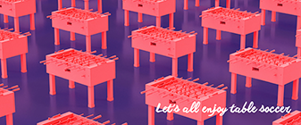
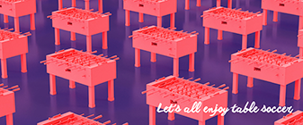
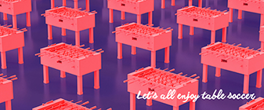
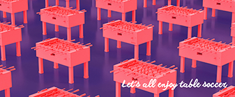

 

Les tirs des ailiers avant (les attaquants des extrémités) en diagonal lorsque les défenseurs et goal sont poussés (ou tirés) à fonds sont autorisés qu’ils soient tirés à gauche comme à droite.
Les reprises sont autorisées aussi bien en double qu’en simple. C'est-à-dire que sont valides les buts lorsque vous déviez une balle qui arrive des demis ou des arrières, lorsque vous la bloquez et que vous frappez immédiatement après. Vous n’avez pas besoin d’attendre que votre adversaire soit prêt pour continuer votre jeu et marquer !! Il en est de même si la balle rebondie après avoir touché les murs du terrain, vous pouvez frapper la balle immédiatement, le tir ne sera pas assimilé à une reprise. Pour résumer, « la reprise » n’existe pas et toute frappe est autorisée avec ou sans contrôle préalable.
La roulette est autorisée dans une certaine mesure : vous ne pouvez pas effectuer plus d’un tour avant la frappe de la balle ni après la frappe de la balle. Mais cela veut donc dire que si vous faites une rotation de 350° avant de toucher la balle et vous continuer avec encore 350° après la frappe, le tir est autorisé ! Même si comme vous le comprendrez, au total, votre joueur aura fait 700° de rotation… Cela vous permet notamment de réaliser des snake shots.
La gamelle qui est le terme désignant un but dont la balle est entrée dans les cages, a tapé le fond et est ressortie a la même valeur qu’un but normal. A la suite d’un tel but, le réengagement se fait aux demis comme dans le cas d’un but classique. Il n’y a pas de points enlevés ou de double point.
(Source : Babyfoot Vintage)